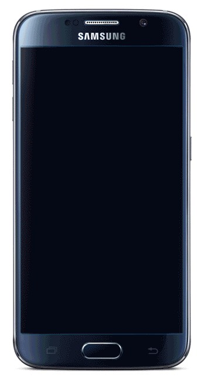
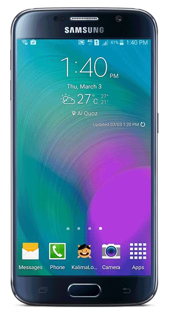
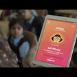

About
I'm a software engineer passionate about writing software that solves
problems in a creative way. For over a decade I've lived and breathed
the Android platform — from the days of AsyncTask and XML
layouts to modern, multi-module apps built with
Kotlin, Coroutines & Flow and
Jetpack Compose.
Currently I'm a senior engineer at The Economist, where I build the Android experience that brings independent journalism to millions of readers — live & on-demand streaming, podcasts, and an offline-first reading experience. Over the years I've shipped apps used by millions across e-sports, automotive CRM, travel, healthcare, ed-tech and retail.
Outside of work I'm a dedicated open-sourcer and writer: I maintain 70+ public repositories of Android samples and reference architectures, write about Android internals on Medium, and have been answering questions on Stack Overflow since 2011.
val devrath = AndroidEngineer(
role = "Senior Software Engineer",
currently = TheEconomist,
stack = listOf(Kotlin, Compose, Media3),
openTo = InterestingConversations,
)Experience
14+ years of building Android software — from an internship at Intel in 2011 to shipping journalism at The Economist today, across product companies, consultancies and studios.
- 14+ years
- 9 companies
- 11 roles
- Android · Kotlin
-
Apr 2024 — Present
Building the Android app of one of the world's most respected publications. Architected live & VOD audio/video streaming with Picture-in-Picture, podcast playback with offline downloads and pick-up-where-you-left-off, an offline-first reading experience, AdMob integration, and an MVI multi-module architecture with a reusable Compose design system.
- Kotlin
- Jetpack Compose
- Media3 / ExoPlayer
- MVI
-
Jan 2024 — Mar 2024
Implemented MVI architecture with Jetpack Compose, led hiring and onboarding for the team, and mentored junior engineers to support their career development.
- Kotlin
- Jetpack Compose
- MVI
- Mentoring
-
Oct 2023 — Dec 2023
Led the go-to-market strategy for Jetpack Compose adoption and designed the integration of a game into a legacy codebase with modern Android components — coordinating sprint planning and technical feasibility with project management.
- Kotlin
- Jetpack Compose
- Gaming
-
Jan 2022 — Sep 2023
Built for one of the world's largest eSports mobile platforms, serving ~85 million users: developed the broadcast-streaming module for live tournaments, bridged Android native with React Native and Unity, built a parallel high-speed downloader with WorkManager, and spearheaded Kotlin and DI adoption.
📉 Game-asset download failures: 7–19% → <0.5%
- Kotlin
- Streaming
- Unity / React Native interop
- Scale
-
Aug 2020 — Jan 2022
Led a large-scale refactor from MVC to MVVM with modularity and automated testing at the core, and delivered DealerSocket CRM — a major mobile release for the US automotive client — working directly with client engineers, product owners and designers.
- Kotlin
- MVVM
- Team Leadership
-
Feb 2020 — Aug 2020
Spearheaded Android development for the Kneura blended-learning platform — an intelligent assistant that customises learning curriculums — plus a silent-update system across product variants and canvas tools for interactive classroom hardware.
- Kotlin
- Ed-tech
- Hardware Integration
-
Oct 2014 — Jan 2020
Nov 2019 — Jan 2020Senior Solutions Engineer
Guided the technical roadmap with MVVM/MVC architectures, built reusable building blocks, and led recruitment for the mobile teams — including work on Disney Cruise Line Navigator.
Oct 2016 — Nov 2019Senior Technical Associate
Led technical delivery for clients including Shoppers Stop, Doctor 24×7, Disney and Samsung (the KALIMA lock-screen Arabic-learning app) — RxJava multithreading, Dagger 2 DI, location services and offline storage.
Oct 2014 — Sep 2016Technical Associate
Full-lifecycle Android development — Activities to Services to Broadcast Receivers — with secure frontend–backend integration for consumer apps.
- Java
- Kotlin
- RxJava
- Dagger 2
-
May 2013 — Sep 2014
Freelance Developer · TwinVaves Technologies Pvt Ltd
Led development of the "GodiswithMe" app end-to-end — research, story-path design, development, testing, Play Store deployment and maintenance — reaching 8,000+ downloads worldwide.
- Android
- Java
- End-to-end delivery
-
Nov 2011 — Aug 2012
Where it all began — helped build a recommendation engine through requirements, design, implementation and testing, and supported the IndiaEduServices pilot across colleges.
- Java
- Data Structures
Recommendations
Colleagues, leads and managers I've worked with have shared recommendations about my work over the years.
Read them on LinkedInProjects
Tunify is my personal hobby project — the rest are some of many production apps I've contributed to across my roles.
-
Tunify — Radio, Music & Podcasts
Aug 2025 — Present · Personal hobby project · Live on Google PlayTunify brings the best of FM, AM, internet and live radio together in one simple, modern app — 65,000+ stations from 200+ countries, with music, news, podcasts, sports and cultural shows from anywhere in the world, all for free.
📡 65,000+ stations · 200+ countries · 100% Compose
- Kotlin
- Jetpack Compose
- ExoPlayer / Media3
- Multi-module
-
The Economist — News, Podcasts
Contribution · The Economist · Live on Google PlayThe flagship Android app I build today — live & on-demand audio/video streaming with Picture-in-Picture, podcasts with offline downloads and resume, and an offline-first reading experience for readers worldwide.
🏆 PPA Video Content of the Year ’26 · Insider streaming
- Kotlin
- Jetpack Compose
- Media3 / ExoPlayer
- MVI
-
Disney Cruise Line Navigator
Contribution · SpurTree Technologies for Disney · Live on Google PlayThe companion app for Disney cruises — helping guests navigate the ship, plan activities and organise their day, from shows to shopping.
- Android
- Java
- Maps & Location
-
Shoppers Stop Fashion Shopping
Contribution · SpurTree Technologies for Shoppers Stop · Live on Google PlayFashion e-commerce for one of India's largest department store chains — apparel, accessories and more from leading brands, delivered to your doorstep.
- Android
- Java
- RxJava
-



Samsung KALIMA Lock App
Contribution · Built for Samsung · Watch on YouTubeA lock-screen learning app built for Samsung — children learn a new Arabic word every time they unlock the device, turning the lock screen into a teaching moment.
- Android
- Lock Screen
- Ed-tech
-
Kneura — Smart Classroom Platform
Contribution · Cybernetyx · Interactive classroom panels on custom AOSPAn AI-powered blended-learning platform for K-12 classrooms, running on interactive panels with a custom AOSP Android OS — I spearheaded the Android apps, the silent-update pipeline with its download manager, and the canvas tooling across hardware variants.
- Android
- Custom AOSP
- RxJava
- Ed-tech
Writing
-
Decoding Android Core Threading: Thread, Runnable, Handler, Looper & MessageQueue
Medium · Android internals -
Supporting Multiple Screens in Android — the Compose Way
Medium · Jetpack Compose -
How to Convert a Callback into a Flow in Kotlin
Medium · Coroutines & Flow
Skills
Languages & UI
- Kotlin
- Java
- Jetpack Compose
- Material 3
- XML & Custom Views
Concurrency & Reactive
- Coroutines
- Kotlin Flow
- RxJava
- LiveData
Architecture
- Clean Architecture
- MVVM / MVI
- Multi-module
- SOLID
- Design Patterns
Dependency Injection & Data
- Hilt
- Dagger 2
- Koin
- Room
- DataStore
- Retrofit / OkHttp
Testing & Tooling
- JUnit
- Espresso
- TDD
- Gradle
- Git
- Detekt / ktlint
- CI/CD
Platform & Media
- Media3 / ExoPlayer
- Services & WorkManager
- AIDL / IPC
- Notifications
- Google Maps
- Unity / React Native interop
Education
-
Ramaiah Institute Of Technology
Master's Degree, Computer Software Engineering · 2010 — 2012Dissertation: "Optical Character Recognition For Auto Navigation Of Robot".
-
Malnad College of Engineering
Bachelor's Degree, Information Science · 2006 — 2010Dissertation: "Multi-model Video Surveillance using pyro-electric infrared sensors".
Licenses & Certifications
-
Google Associate Android Developer Certification
Issued Feb 2022
Volunteering
-
Community Moderator · Stack Overflow
Jan 2011 — PresentActive community member with 42k+ reputation, 55 gold badges, a top-150 ranking in India — and the 390th person in the world to earn the Android gold badge.
-
Member, Board of Studies · Malnad College of Engineering
Jun 2024 — PresentAdvising on the scheme and syllabus for the Information Science & Engineering department — keeping the curriculum aligned with the tools and technologies students need in industry.
-
Guest Speaker · NAVKIS College of Engineering
Apr 2021Trained faculty from multiple colleges in a VTU-authorised faculty development program on Android and Kotlin mobility platforms.
-
Campus Recruitment Drives · SpurTree Technologies
May 2019Conducted placement drives for fresh graduates at Malnad College of Engineering, Hassan and Vidyavardhaka College of Engineering, Mysore.
Honors & Awards
-
Video Content of the Year
Professional Publishers Association · Jun 2026 · The EconomistPlayed a key role in developing Insider, The Economist's video streaming platform — our team received the PPA's Video Content of the Year award.
-
Code Star
Mobile Premier League · Nov 2021Led the Android Download Manager integration that cut game-asset download failure rates from 7–19% to below 0.5%, improving retention and user experience.
-
Mobile Application Development — Hands-On Experience
NAVKIS College of Engineering, Hassan · Apr 2021Recognised for teaching college faculty in a Visvesvaraya Technological University–authorised faculty development program on mobile development.
Get In Touch
I'm always open to interesting conversations — whether it's Android, a role you're hiring for, or a project you're excited about. My inbox is open, and I'll do my best to reply.
Say hello